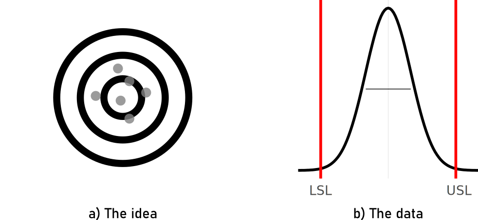

Data Quality
Data Quality
Quality
- Quality (dictionary)
- How good or bad something is. Cambridge Dictionary
“… Quality is a perceptual, conditional, and somewhat subjective attribute and may be understood differently by different people. …” Wiki
The Cathedral and the Bazaar
ISO 8000
- ISO
- International Standards Organization
set of standards for data quality for the exchange between organizations and systems
Master data in the form of characteristic data that are
- exchanged between organizations and systems, and that
- conform to the data specifications that
- can be validated by computer software.
(ISO 2022)
Part 1: General Requirements
- Part 1.a The master data message shall unambiguously state all information necessary for the receiver to determine its meaning
- Part 1.b A formal syntax must be specified using a formal notation
- Part 1.c Any data specification required by the message shall be in a computer interpretable language
- Part 1.d The message must explicitly indicate both the data specifications it fulfills and the formal syntax (or syntaxes) to which it complies
- Part 1.e It must be possible to check the correctness of the master data message against both its formal syntax and its data specifications
- Part 1.f The references within the master data message to data dictionary entries must be in the form of unambiguous identifiers conforming to an internationally recognized scheme
Part 2: Syntax of the message
- The message shall contain in its header a reference to the formal syntax to which it complies.
- The reference shall be an unambiguous identifier for the specific version of the formal syntax used to encode the message.
- The formal syntax shall be available to all interested parties.
<?xml version=1.0”?>
Part 3: Semantic encoding
- Part 1.f The references within the master data message to data dictionary entries must be in the form of unambiguous identifiers conforming to an internationally recognized scheme
- URI
- Uniform Resource Identifier - a unique sequence of characters that identifies an abstract or physical resource, such as resources on a webpage, mail address, phone number, books, real-world objects such as people and places, concepts.
- RFC
- Request for Comments - the first technical specifications of the inner workings of the internet RFC 1149—A standard for the transmission of IP datagrams on avian carriers
Semantic encoding example
(property1, value1), (property2, value2), ., (propertyN, valueN)
Message: (Name, “John Doe”), (Income, “A”), …
Message: (ICTIP.Property.ABC.101, “John Doe”), (ICTIP.Property.ABC.105, “A”), …
Data dictionary!!!
unique identifier (URI) - RFC 3986
term (name)
clear definition
Identifier: ICTIP.Property.ABC.105
Term: Individual_Income_Bracket
Definition: Range of individual income given in increments of $25,000 starting at $0 and coded with single letters “A”, “B”, “C”, “D”, and “E”
“A” for [0 - 25,000]
“B” for [25,001 - 50,000]
“C” for [50,001 - 75,000]
“D” for [75,001 - 100,000]
“E” for [100,001 and above]Data Quality
“… Data are of high quality if they are “Fit for Use” in their intended operational, decision-making and other roles. … ”

Data Quality issues
- Data Entry for the London Summer Olympics
- an employee simple typed \(20,000\) seats available, while there were only \(10,000\)
- buyers were able to exchange the already bought tickets
- The London Whale
- using a risk model that involved copy and pasting different multiple spreadsheats
- not only were \(\$2bn\) losses wrongly calculated, they were actually counted as gains summing up to a loss of \(\$6.2bn\)
Data Quality Tools
Data Elements

Data Types
Possible Data Type
Nominal Data
Examples of Nominal Data
Ordinal Data

Example Ordinal Data
Discrete Data

Example Discrete Data
Continous Data
Example Continous Data
“… All actual sample spaces are discrete, and all observable random variables have discrete distributions. The continuous distribution is a mathematical construction, suitable for mathematical treatment, but not practically observable. …”
Requirements Documents
- Why should the database be established?
- How are the data to be collected?
- How do analysts plan to use the data?
- What database-design issues may affect these data uses?
Tests
Deterministic Tests
- Range Test
- If-then Test
- Ratio Control Test (similar to range test)
- Zero Control Test (the components of a sum a listed seperartly)
- Other internal consistency tests
Statistical Tests
- Outlier detection
- well covered and not detailed here
- (E)xploratory (D)ata (A)nalysis
Minimizing Processing Errors
“… review of the codes assigned on a schedule is oftentimes not a matter of correcting wrong codes, but merely a matter of honest differences of opinion between coder and reviewer. …”
“… even though the two sets of instructions supposedly say the same thing in different words. …”
“… it is impossible to define a perfect job of coding except in terms of the distributions produced because there is no way of determining whether the individual codes have been assigned correctly. …”
Recommendations
Readily correct obvious errors that are easy to fix
Preserve the orginal dataset (Excel)
Save intermediate versions (Version Control)
Do not over edit.
Do consistency checks.
Build in redundancy (ZIP Code AND postal adress)
Measuring Data Quality
“… trust and data quality are inextricably linked …”
“… The business user should invest in, on a prioritized basis, establishing data quality metrics for datasets and stores of interest, as well as in building data quality reporting processes for them. …
Data Quality Tools
It’s a mess!
Data Quality in Production
“… All actual sample spaces are discrete, and all observable random variables have discrete distributions. The continuous distribution is a mathematical construction, suitable for mathematical treatment, but not practically observable. …”

How good is good enough
Process Capability - idea
High Accuracy - Low Precision
Low Accuracy - Low Precision
Low Accuracy - High Precision
High Accuracy - High Precision

Computing Process Capabilities
\[\begin{align} C_{p} &= \frac{USL-LSL}{6\sigma}\\ C_{pk} &= \frac{\min(USL-\mu,\mu-LSL)}{3\sigma}\\ \end{align}\]
Measurement System Analysis Type 1 (MSA1)
A type 1 gage study assesses only the variation that comes from the gage. Specifically, this study assesses the effects of bias and repeatability on measurements from one operator and one reference part.
- Focus on gage as the only source of variation
- First Step
- 50 Measurements
- repeated on a reference part
Potential Capability index \(C_g\)
\[\begin{align} C_g = \frac{K/100*Tol}{L*\sigma} \label{Cg} \end{align}\]
- \(Tol\)
- Tolerance
- \(C_g\)
- Capability Gage
- K
- percentage of the tolerance (\(20\%\))
- \(\sigma\)
- standard deviations of the tolerance
- L
- number of standard deviations that represent the process (6)
Capability index with systematic error \(C_{gk}\)
\[\begin{align} C_{gk} = \frac{(0.5*K/100)*Tol - |\bar{x}-x_{true}|}{3*\sigma} \label{Cgk} \end{align}\]
- \(Tol\)
- Tolerance
- \(\bar{x}\)
- mean of the measurements
- K
- percentage of the tolerance (\(20\%\))
- \(x_{true}\)
- the “true” value of the reference (calibration)
- \(\sigma\)
- standard deviation of the measurements
theoretical example

- \(x_{true} = 20.3020\)

Disitribution of the data


Formal test for distribution
- \(H_0\): Data is normal distributed.
- \(H_a\): Data is not normal distributed.
\(C_g\) and \(C_{gk}\)
- \(C_g, C_{gk} > 1.33\) empirical, must be cross-checked with customer
- calculation according to \(C_g\) and \(C_{gk}\)
| Cg | Cgk |
|---|---|
| 2.13 | 2.02 |
graphical depiction
Figure 1: MSA 1 graphical depiction.
… the era of AI?


Gage R&R
A Gage R&R study assesses the variation in measurements from a specific process by measuring the same parts multiple times with the same instrument by different operators. It helps determine the reliability of the measurement system and identifies areas for improvement.
Definitions
- Accuracy
- The closeness of agreement between a test result and the accepted reference value.
- Trueness
- The closeness of agreement between the average value obtained from a large series of test results and an accepted reference value.
- Precision
- The closeness of agreement between independent test results obtained under stipulated conditions.
- Repeatability
- Precision under repeatability conditions (where independent test results are obtained using the same method on identical test items in the same laboratory by the same operator using the same equipment within short intervals of time).
- Reproducibility
- Precision under reproducibility conditions (where test results are obtained using the same method on identical test items in different laboratories with different operators using different equipment).
Introductory example
- A battery manufacturer makes several types of batteries for domestic use.
- Voltage is Critical To Quality (CTQ)
- the parts are the batteries \(a = 3\)
- the appraisers are the voltmeters \(b = 2\)
- measurement is taken three times \(n = 3\)
- \(a \times b \times n = 3 \times 2 \times 3 = 18\) measurements
The data
The analysis
Analysis of Variance Table
Response: voltage
Df Sum Sq Mean Sq F value Pr(>F)
battery 2 0.063082 0.031541 1.9939 0.1788
voltmeter 1 0.044442 0.044442 2.8095 0.1195
battery:voltmeter 2 0.018472 0.009236 0.5839 0.5728
Residuals 12 0.189821 0.015818 WOW!
Variance decomposition - the theory
Repeatability
\[\begin{align} \sigma^2_{Repeatability} = MSE \end{align}\]
- directly obtainable in ANOVA table
Reproducibility
\[\begin{align} \sigma^2_{Reproducibilty} = \sigma^2_{Appraiser} + \sigma^2_{Interaction} \end{align}\]
\[\begin{align} \sigma^2_{Appraiser} = \frac{MSB-MSAB}{a \times n} \end{align}\]
- \(\sigma^2_{Appraiser}\)
- Variance introduced by appraisers
- \(MSB\)
- Mean of squares - B
- \(MSAB\)
- Mean squares of interaction - AB
- \(a\)
- number of levels for factor - number of batteries: 3
- \(n\)
- number of replicated measures: 3
\[\begin{align} \sigma^2_{Interaction} = \frac{MSBA-MSE}{n} \end{align}\]
- \(\sigma^2_{Interaction}\)
- Variance introduced by interaction
- \(MSAB\)
- Mean squares of interaction - AB
- \(MSE\)
- Mean squares of error
- \(n\)
- number of replicated measures: 3
Gage R&R
\[\begin{align} \sigma^2_{Gage\;R\&R} = \sigma^2_{Repeatability} + \sigma^2_{Reproducibility} \end{align}\]
All variance is calculated that comes from the Gage!
Are we finished?
We measure something, so what about the part?
Part to Part
\[\begin{align} \sigma^2_{Part\; to \; Part} = \frac{MSA-MSAB}{b \times n} \end{align}\]
- \(\sigma^2_{Part\; to \; Part}\)
- Variance introduced by the parts
- \(MSA\)
- Mean of squares - A
- \(MSAB\)
- Mean squares of interaction - AB
- \(b\)
- number of appraisers - number of voltmeters: 2
- \(n\)
- number of replicated measures: 3
Total Variability
Variance decomposition - the values
\[\begin{align} \sigma^2_{Repeatability} &= 0.0158 \nonumber \\ \sigma^2_{Appraiser} &= 0.0039 \nonumber \\ \sigma^2_{Interaction} &= 0 <0 \rightarrow 0 \nonumber \\ \sigma^2_{Reproducibility} &= 0.0039 \nonumber \\ \sigma^2_{Gage\;R\&R} &= 0.0197 \nonumber \\ \sigma^2_{Part\; to \; Part} &= 0.0037 \nonumber \\ \sigma^2_{Total} &= 0.0234 \nonumber \end{align}\]
ANOVA
Sum of squared error (SSE) and Mean Squared Error (MSE)
ANOVA complete model
ANOVA reduced model
F(isher) Disitribution
- is a “new” distribution function that arises from two randomly distributed variables
- “connects” two distributions functions
\[\begin{align} F_{m,n} = \frac{\chi^2_m/m}{\chi^2_n/n} \nonumber \end{align}\]
\[\begin{align} F_{m,n} = \frac{\chi^2_m/m}{\chi^2_n/n} \nonumber \end{align}\]
Gage R&R “standardized output”
AVNOVA table
Df Sum Sq Mean Sq F value Pr(>F)
battery 2 0.06308 0.03154 3.415 0.227
voltmeter 1 0.04444 0.04444 4.812 0.160
battery:voltmeter 2 0.01847 0.00924 0.584 0.573
Repeatability 12 0.18982 0.01582
Total 17 0.31582 ANOVA reduced model
Df Sum Sq Mean Sq F value Pr(>F)
battery 2 0.06308 0.03154 2.120 0.157
voltmeter 1 0.04444 0.04444 2.987 0.106
Repeatability 14 0.20829 0.01488
Total 17 0.31582 Variance decomposition
VarComp %Contrib
Total Gage R&R 0.018162959 86.74
Repeatability 0.014878111 71.05
Reproducibility 0.003284848 15.69
voltmeter 0.003284848 15.69
Part-To-Part 0.002777127 13.26
Total Variation 0.020940086 100.00Study Variance
StdDev StudyVar %StudyVar %Tolerance
Total Gage R&R 0.13477002 0.8086201 93.13 80.86
Repeatability 0.12197586 0.7318552 84.29 73.19
Reproducibility 0.05731359 0.3438816 39.61 34.39
voltmeter 0.05731359 0.3438816 39.61 34.39
Part-To-Part 0.05269846 0.3161907 36.42 31.62
Total Variation 0.14470690 0.8682414 100.00 86.82ndc - number of distinct categories
[1] 1standardized graphical output

Gage R&R in the classroom
3 parts
3 volunteers
1 recorder
1 gage
10 experiments
3 repetitions
randomize the trials
now do it
Attribute Agreement Analysis
Attribute Agreement Analysis (AAA) is a statistical method used to evaluate the agreement among multiple observers when assigning categorical ratings to items. It involves defining attributes, selecting observers, collecting ratings, and analyzing the data to determine the level of agreement. This helps ensure the reliability of assessments and informs decision-making processes.
Setup
Results
| appraiser | runs | units | reference | results |
|---|---|---|---|---|
| 1 | 1 | 3 | bad | bad |
| 1 | 1 | 1 | good | good |
| 1 | 1 | 2 | bad | good |
| 2 | 1 | 3 | bad | good |
| 2 | 1 | 1 | good | good |
| 2 | 1 | 2 | bad | good |
| 1 | 2 | 3 | good | good |
| 1 | 2 | 1 | bad | bad |
| 1 | 2 | 2 | bad | bad |
| 2 | 2 | 3 | good | bad |
| 2 | 2 | 1 | bad | bad |
| 2 | 2 | 2 | bad | good |
Overall agreement
\[\begin{align} Agreement_{overall} = 100 \times \frac{X}{N} \end{align}\]
- \(X\)
- number of times appraisers agree with reference
- \(N\)
- number of rows with valid data
\[\begin{align} Agreement_{overall} = 58.3\% \nonumber \end{align}\]
Appraiser Agreement
\[\begin{align} Agreement_{appraiser} = 100 \times \frac{X}{N} \end{align}\]
- \(X\)
- number of times the single appraisers agrees with reference
- \(N_i\)
- number of runs for the \(i\)-th appraiser
\[\begin{align} Appraiser_{1} &= 83.3\% \nonumber \\ Appraiser_{2} &= 33.3\% \nonumber \end{align}\]
Reference Agreement
\[\begin{align} Agreement_{reference} = 100 \times \frac{X}{N} \end{align}\]
- \(X\)
- number of times result agrees with the reference
- \(N_i\)
- number of runs for the \(i\)-th result
\[\begin{align} Reference_{bad} &= 50\% \nonumber \\ Reference_{good} &= 75\% \nonumber \end{align}\]
Run agreement
\[\begin{align} Agreement_{run} = 100 \times \frac{X}{N} \end{align}\]
- \(X\)
- number of reference agreement in runs
- \(N_i\)
- number of runs for the \(i\)-th run
\[\begin{align} Reference_{1} &= 50\% \nonumber \\ Reference_{2} &= 66.7\% \nonumber \end{align}\]
Appraiser and reference agreement
\[\begin{align} Agreement_{appraiser \; ref} = 100 \times \frac{X}{N} \end{align}\]
- \(X\)
- number of reference agreement in for appraisers in reference class
- \(N_i\)
- number of agreements for the \(i\)-th appraiser and the \(i\)-th standard
| appraiser | reference | overall_agreement |
|---|---|---|
| 1 | bad | 75.00% |
| 1 | good | 100.00% |
| 2 | bad | 25.00% |
| 2 | good | 50.00% |
graphical representation


Missing values
What is a missing value?
Missing data is defined as the values or data that is not stored (or not present) for some variable/s in the given dataset.
Representation
NullorNABlank or Empty Cells
Placeholder Values:
-9999,-1, values that are unlikely to occur in the actual data.Special Characters:
?,*
Types of missing values
(M)issing (C)ompletly (A)t (R)andom
- same probability of data missing for all observations
- completely independent of other data (no pattern)
- human error
- system/equipment failure
- statistical analysis remains unbiased
(M)issing (A)t (R)andom
- can be explained by other variables (on which information is available)
- only missing in sub-samples of the data
- e.g.
Genderis complete butAgeis not - often Females do not want to reveal their age
- probability depends on variable
Gender(but missing value can not be predicted)
(M)issing (N)ot (A)t (R)andom
- not MCAR or MAR
- probability depends on unobserved data
- other observed data can not explain it
- e.g. High-income individuals may be more likely to withhold income information
- this may be due to concerns about taxation, privacy or social stigma
- the probability of data missing directly depends on the data itself
treating missing values
- Deleting missing values
- Imputing missing values
- Imputing missing values for categorical features
- Use as feature
Deleting
Pros:
- Easy
- Improves the quality of the dataset by removing incomplete or unreliable observations.
- Prevents bias that may arise from imputing missing values, ensuring more accurate results.
- Reduces computational complexity, as imputation methods can be resource-intensive.
Cons:
- Reduces the size of the dataset, potentially leading to loss of information and statistical power.
- Deletes potentially valuable data points, especially if missingness is not completely random.
- Can introduce bias if missingness is related to the outcome or other variables of interest.
- Eliminates the opportunity to explore patterns or reasons behind missingness, which could provide valuable insights.
Imputing missing values
Mean/median imputing (Continous Data)
Mode imputing (Catgorical Data)
| category |
|---|
| A |
| B |
| NA |
| B |
| A |
| A |
Characteristic |
N = 6 1 |
|---|---|
| category | |
| A | 3 (60%) |
| B | 2 (40%) |
| Unknown | 1 |
| 1
n (%) |
|
| category |
|---|
| A |
| B |
| A |
| B |
| A |
| A |
Characteristic |
N = 6 1 |
|---|---|
| category | |
| A | 4 (67%) |
| B | 2 (33%) |
| 1
n (%) |
|
Regression imputing (Continous Data)
Imputation is not prediction
Assessing the discrepancy between true data and the imputed data may seem a simple and attractive way to select the best imputation method.
Selecting such methods may be harmful as these might increase the rate of false positives.
In essence, there was not really any information missing in the first place, it was only coded in a different form.
Imputation is not prediction.
Data Quality summary
- Data Quality is hard
- Top Down or Bottom up?
- simple things go wrong in the real world
- test stuff
- be specific
- there is no recipe
- garbage in, garbage out
- classic ways are not fancy, but useful. Use this to your advantage
- never trust data
- invest early, profit soon
References

Copyright Prof. Dr. Tim Weber, 2024
Buuren, Stef Van. 2021. Flexible Imputation of Missing Data, Second Edition. CRC Press.
Cano, Emilio L. 2012. Six Sigma with r Statistical Engineering for Process Improvement. Springer.
Deming, W. Edwards. 2006. “On Errors in Surveys (an Excerpt).” The American Statistician 60 (February): 34–38. https://doi.org/10.1198/000313006x91755.
Fleckenstein, Mike, and Lorraine Fellows. 2018. “Modern Data Strategy” Not available: Not available. https://doi.org/10.1007/978-3-319-68993-7.
Herzog, Thomas N., Fritz Scheuren, and William E. Winkler. May. Data Quality and Record Linkage Techniques. Springer.
ISO. 2022. 8000-1:2022 Data Quality. International Standards Organization. https://www.iso.org/standard/81745.html.
J. Bibby, E. J. G. Pitman. 1980. “Some Basic Theory for Statistical Inference.” The Mathematical Gazette 64 (428): 138–38. https://doi.org/10.2307/3615104.
Little, Roderick J. A., and Donald B. Rubin. 2002. Statistical Analysis with Missing Data. Wiley Series in Probability and Statistics. Wiley. https://doi.org/10.1002/9781119013563.
Mack, Christina, Zhaohui Su, and Daniel Westreich. 2018. “Types of Missing Data.”
Raymond, Eric S. 2001. The Cathedral & the Bazaar. "O’Reilly Media, Inc.".
Shapiro, S. S., and M. B. Wilk. 1965. “An Analysis of Variance Test for Normality (Complete Samples).” Biometrika 52 (December): 591–611. https://doi.org/10.1093/biomet/52.3-4.591.